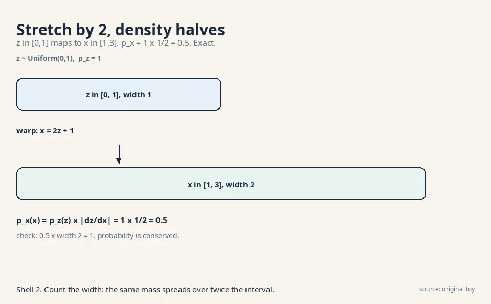
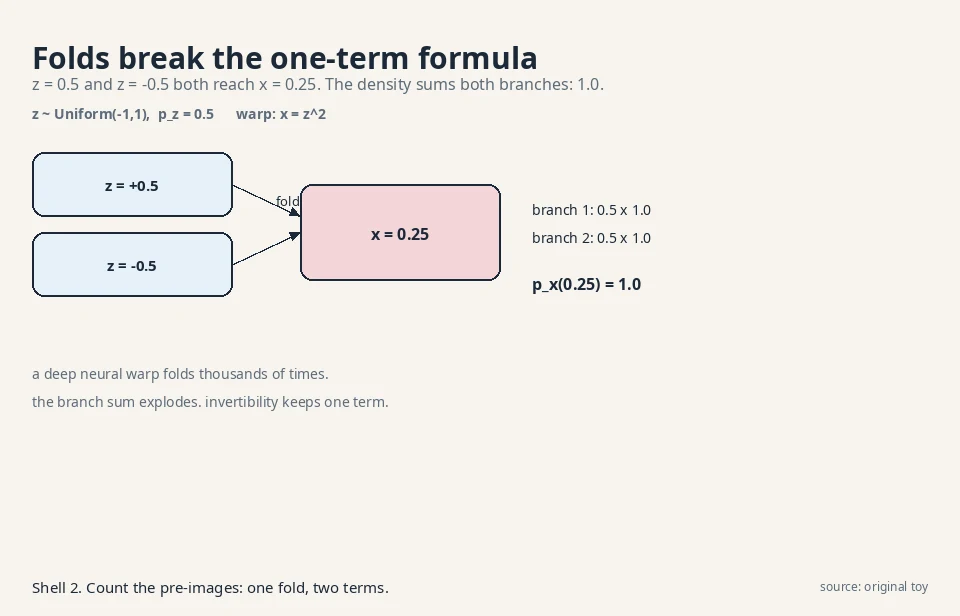
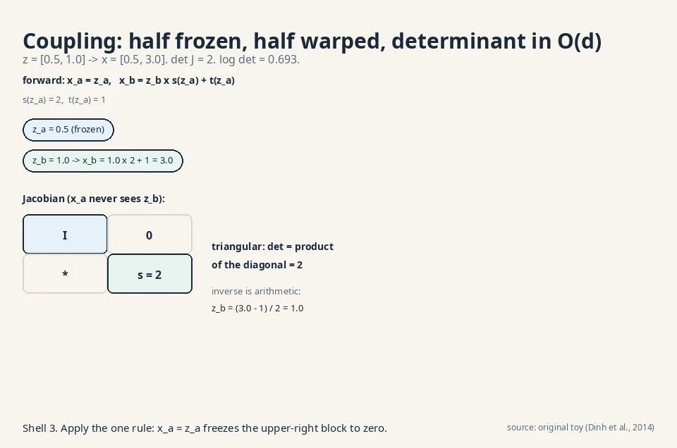
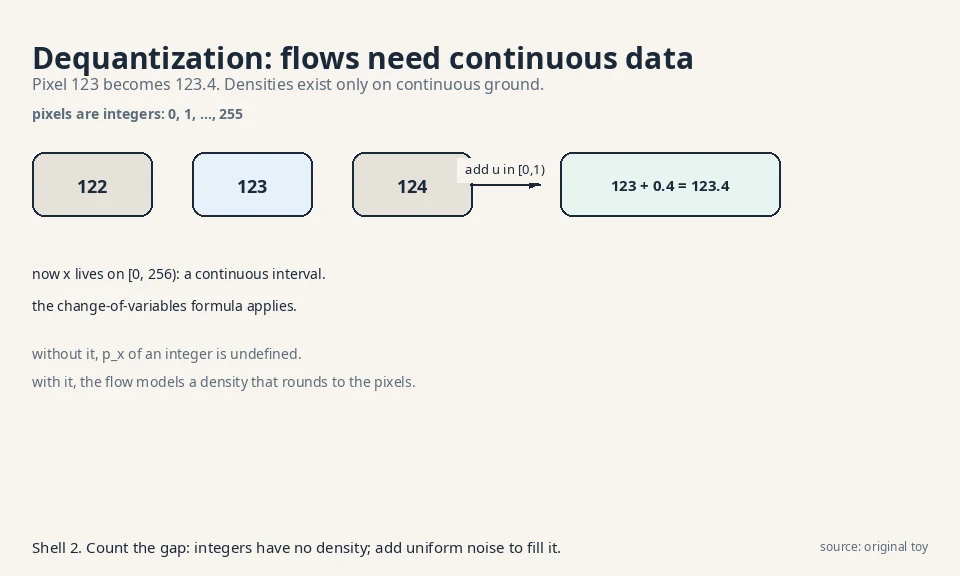
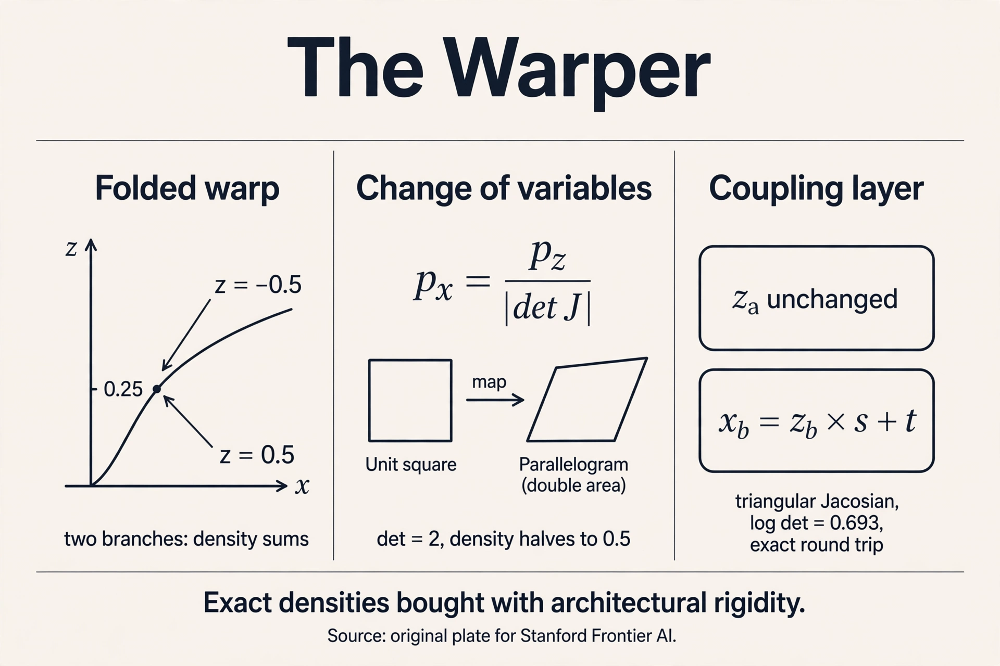

Lecture 4: Normalizing Flows: The Warper
The question, for warps
Restate the one question: learn the rule behind samples, draw fresh samples from it. The warper’s answer: start with simple noise, say uniform numbers. Learn a warping function that bends the noise into data. The warp must be invertible: every noise point maps to exactly one data point and back. Because the warp is invertible, the machine computes exact probabilities through the change-of-variables formula. No lower bound. No approximation. Exact density is the warper’s prize.
First attempt: bend noise, then count
Take the simplest warp. Noise z is uniform on [0,1]: p_z(z) = 1. The warp stretches and shifts: x = 2z + 1. So z = 0 becomes x = 1, z = 1 becomes x = 3. The outputs fill [1,3].
What is the density of x? Probabilities are conserved: the chance that x lands in a small interval equals the chance that z lands in the corresponding pre-interval.
z: |--dz--| p_z = 1
| warp: x = 2z + 1
v
x: |----dx----| dx = 2 dz
A dz-wide slice of z maps to a dx-wide slice of x, with dx = 2 dz. The same probability mass spreads over twice the width, so the density halves:
p_x(x) dx = p_z(z) dz p_x(x) = p_z(z) x |dz/dx| = 1 x 1/2 = 0.5, for x in [1,3]
Check: the density 0.5 over a width-2 interval integrates to 1. The formula p_x(x) = p_z(z) |dz/dx| is the change of variables: density transforms by the inverse slope. Stretch by 2, density halves. This is exact, not a bound.

Where general warps break, part 1: folds
The formula assumed one z per x. Drop that and watch it break. Take z uniform on [-1,1], so p_z = 0.5, and the warp x = z^2. Now z = 0.5 and z = -0.5 both give x = 0.25. The warp folds.
Each branch contributes its own term. Near x = 0.25:
branch 1: z = +sqrt(x), |dz/dx| = 1/(2 sqrt(x)) = 1.0 branch 2: z = -sqrt(x), |dz/dx| = 1/(2 sqrt(x)) = 1.0 p_x(0.25) = 0.5 x 1.0 + 0.5 x 1.0 = 1.0
Check: p_x(x) = 0.5/sqrt(x) on [0,1] integrates to [sqrt(x)]_0^1 = 1. The math works, but the price is visible: the density is a sum over pre-images, one term per fold. A deep neural warp folds thousands of times. The branch count explodes, and the exact formula becomes unusable. Invertibility is not a luxury. It is what keeps the density to a single term.

Where general warps break, part 2: the determinant bill
Move to 2-D. A warp maps (z1, z2) to (x1, x2). The slope becomes a matrix, the Jacobian: J[i,j] = dx_i/dz_j. The density formula uses its determinant, which measures volume change:
p_x(x) = p_z(z) / |det J|
Work a toy. Warp: x1 = 2 z1, x2 = z1 + z2. The Jacobian:
J = [ dx1/dz1 dx1/dz2 ] = [ 2 0 ]
[ dx2/dz1 dx2/dz2 ] [ 1 1 ]
det J = 2 x 1 - 0 x 1 = 2
The unit square (area 1) warps to a parallelogram of area 2, so density halves: p_x = 1/2 = 0.5 with p_z = 1. The determinant is the 2-D version of the stretch factor.
Now the bill. A general d x d determinant costs O(d^3) operations. For d = 1,000 (a tiny image patch), that is 10^9 multiply-adds per density evaluation, versus one forward pass of the network. Exact density through a free-form neural warp is exact but unaffordable. The warper needs warps whose determinants cost almost nothing.
The key question
What if the warp is invertible by construction, with a Jacobian whose determinant reads off in O(d) time?
The new idea: coupling layers
Split the variables into two halves. Transform one half with a function of the other half, and leave the other half untouched. This is a coupling layer (Dinh et al., 2014, the design the Papamakarios review systematizes):
forward: x_a = z_a
x_b = z_b x s(z_a) + t(z_a)
inverse: z_a = x_a
z_b = (x_b - t(x_a)) / s(x_a)
s and t are small neural networks (scale and shift). The inverse is free: x_a recovers z_a directly, then z_b follows by arithmetic. No iteration, no solving.
The Jacobian is triangular, because x_a does not depend on z_b:
J = [ I 0 ]
[ * diag(s) ]
det J = product of s(z_a) entries
A triangular determinant is the product of its diagonal: O(d) operations. Watch it on numbers. z = [0.5, 1.0], s(z_a) = 2, t(z_a) = 1:
forward: x_a = 0.5, x_b = 1.0 x 2 + 1 = 3.0 inverse: z_a = 0.5, z_b = (3.0 - 1) / 2 = 1.0 (round trip works) log det J = log 2 = 0.693 p_x([0.5, 3.0]) = p_z([0.5, 1.0]) / 2

Sampling runs the warp forward: draw z from a standard bell curve, apply the layers, get x. Density runs it backward: map x to z, evaluate p_z(z), divide by the determinant. Both directions are exact. Stack many coupling layers, alternating which half gets transformed, and the warp gains expressivity while every layer stays invertible with a cheap determinant.
Subchapter: autoregressive flows: triangular by ordering
Coupling is not the only triangular design. Autoregressive flows order the variables and let each one depend only on the earlier ones:
x_i = z_i x s(x_1..x_{i-1}) + t(x_1..x_{i-1})
The Jacobian is triangular by construction: x_i never sees z_j for j > i. Same O(d) determinant. But the direction of speed flips. MAF (masked autoregressive flow) evaluates densities fast (one parallel pass gives all s, t) and samples slowly (x_1 first, then x_2, serial: the storyteller’s bill). IAF (inverse autoregressive flow) is the mirror: sampling is fast, density evaluation is serial.
This is the same tradeoff as L02, wearing flow clothes. The decision rule: pick MAF when you score data (anomaly detection: fast p(x) per point), IAF when you generate (fast sampling). RealNVP’s coupling layers sit in the middle: both directions fast, less expressive per layer. The Papamakarios review maps the whole family. The determinant bill decides every entry.
Subchapter: Glow: 1x1 convolutions and ActNorm
Coupling layers freeze half the channels per layer. Glow (Kingma and Dhariwal, 2018) adds two invertible ingredients so every channel mixes. An invertible 1x1 convolution is a learned matrix W applied at every pixel across channels: x = W z per pixel. Its log determinant is h x w x log|det W|: one small matrix determinant, broadcast over the image. An ActNorm layer is per-channel scale and shift, initialized so the first batch has zero mean and unit variance, then trained freely: its log determinant is the sum of log scales.
Work the numbers on a 32x32 image with 64 channels. The 1x1 convolution’s determinant is a 64x64 matrix determinant: O(64^3) = 262,144 ops, computed once per layer, not per pixel. The broadcast multiplies by 1,024 pixels for the log-det sum: still O(d). Glow stacks actnorm, 1x1 conv, and coupling into one “flow step” and repeats it dozens of times. The result generated 256x256 faces that rivaled GANs in 2018, with exact likelihoods attached. [uncertain]: whether the lecture covers Glow. It is included as the canonical image-flow architecture from the cited papers.
Subchapter: dequantization: flows need continuous data
Pixels are integers: 0, 1, …, 255. The change-of-variables formula needs continuous densities. An integer has no density. The fix is dequantization: add uniform noise u in [0,1) to each pixel. Pixel 123 becomes 123.4, living on the continuous interval [0, 256).

Why uniform and not Gaussian? Uniform noise on [0,1) keeps the model honest: the dequantized density, rounded back down, reproduces a valid distribution over the original integers. Gaussian noise would smear across pixel boundaries. The decision rule: always dequantize discrete data before a flow, and report likelihoods in bits per dimension on the dequantized scale so models compare fairly. Skip this step and the “exact likelihood” is exact for the wrong object.
Subchapter: continuous flows: the ODE view
Stack infinitely many infinitesimal coupling layers and the warp becomes a differential equation: dx/dt = f_theta(x, t), from t = 0 (noise) to t = 1 (data). This is a neural ODE (FFJORD: Grathwohl et al., 2018). The log determinant becomes an integral of the trace of the Jacobian:
log p(x_1) = log p(x_0) - integral_0^1 Tr(d f / d x) dt
The trace costs O(d): one backward pass gives the diagonal sum via Hutchinson’s estimator, no O(d^3) determinant anywhere. Sampling solves the ODE forward. Density solves it backward. The price moves: no architectural constraints at all (f can be any network), but every evaluation solves an ODE numerically, tens to hundreds of function evaluations per density. The discrete flows pay in rigidity. The continuous flow pays in compute. This ODE view is also the bridge to L06: flow matching trains the same velocity field without solving the ODE.
Explainer: Normalizing Flows Simply Explained. Reversibility, the geometry of stretching probability, Jacobian bookkeeping, coupling layers, and continuous flows. Watch after the coupling-layers section.
Mapping back: what each property fixes
| General-warp failure | Coupling-layer answer | How |
|---|---|---|
| Folds: density sums over exploding branches | Invertible by construction | One z per x, always. The inverse is arithmetic |
| Determinant costs O(d^3): 10^9 ops at d = 1,000 | Triangular Jacobian | det = product of diagonal entries, O(d) |
| No sampling rule | Fixed base distribution N(0,I) | Draw z, warp forward |
| Discrete pixels have no density | Dequantization | Add uniform noise and model the continuous relaxation |
The honest price: rigidity, demonstrated
The coupling constraint is strict: each layer leaves half the variables untouched. One layer cannot change z_a at all. Work it: with z = [0.5, 1.0] and the mask above, x_a = 0.5 no matter what s and t learn. The layer’s expressive power is confined to one half. Real flows stack dozens of layers with alternating masks and permutations so every variable gets transformed eventually, but the constraint never lifts: the architecture family is a small subset of all neural maps.
Two more prices, stated plainly. First, dimension is frozen: the warp maps R^d to R^d, so flows cannot compress to a small latent space the way the VAE’s sculptor does. A 256x256 image needs a 196,608-dimensional warp. Second, the triangular structure biases the function class: variables transformed early never see variables transformed late within one layer. Expressivity studies show flows need more depth than free-form networks for the same fit.
What is used where: the warper in production
| System | How it uses the warper | Evidence |
|---|---|---|
| WaveGlow (NVIDIA, 2018) | Flow-based neural vocoder: mel-spectrogram to raw audio waveform | Public: Prenger et al., 2018, arxiv 1811.00002 |
| Glow | 256x256 face generation with exact likelihoods, 1x1 convolutions | Public research: Kingma and Dhariwal, 2018, arxiv 1807.03039 |
| RealNVP | The coupling-layer blueprint every later flow builds on | Public research: Dinh et al., 2016, arxiv 1605.08803 |
| FFJORD | Continuous-time flows for density estimation | Public research: Grathwohl et al., 2018, arxiv 1810.01367 |
| VITS (speech) | Flow-based priors inside the VAE latent | Public: Kim et al., 2021, arxiv 2106.06103 |
The pattern: flows ship where exact density matters more than raw sample quality. Speech vocoders (WaveGlow), anomaly detection, lossless compression (bits-back coding needs exact probabilities), scientific simulators with calibrated uncertainties. The warper is the density instrument. The restorer is the sample artist.
Tying to CS336: what flows cannot use
CS336 builds the transformer block: residual stream, layer norm, multi-head attention, MLP. Every piece is free-form. A residual block x + f(x) is not invertible in general: two different inputs can map to one output, which is exactly the folding failure from the toy. So flow architectures cannot borrow the transformer block as-is. They use restricted pieces: coupling layers, invertible 1x1 convolutions (Glow), activation normalization with tractable determinants. The warper’s exactness is bought with architectural discipline that the storyteller’s transformer never needs.
Because the density formula p_x(x) = p_z(z) / |det J| assumes exactly one pre-image z per x. The folding toy shows the alternative: with x = z^2, both z = 0.5 and z = -0.5 give x = 0.25, and the density becomes a sum over branches (0.5 x 1.0 + 0.5 x 1.0 = 1.0). A deep network folds thousands of times, so the branch sum explodes. Invertibility keeps the formula to one term. In the limit of many layers, yes: coupling layers with alternating masks are universal approximators of distributions under mild conditions. In practice, depth is the price: flows stack dozens of restricted layers where a free-form network might use a few. Exactness trades against parameter efficiency, not against ultimate expressivity.
How much the warp stretches volume. In the 1-D toy, x = 2z + 1 stretches by 2, so density halves: p_x = 0.5. In the 2-D toy, det J = 2 means the unit square becomes an area-2 parallelogram, so density halves again: p_x = 0.5. Probability mass is conserved. The determinant is the exchange rate between z-volume and x-volume. The determinant of a triangular matrix is the product of its diagonal entries: d multiplications instead of O(d^3). The coupling layer’s Jacobian is triangular because x_a = z_a does not depend on z_b, so the upper-right block is zero. At d = 1,000, that is 1,000 operations versus 10^9.
Exactness is not the same as sample quality per parameter. The rigidity price bites: coupling layers leave half the variables fixed per layer, dimensions cannot shrink, and matching diffusion’s sample quality takes very deep stacks. Diffusion pays a different price (1,000 sampling steps) but uses free-form denoiser architectures with no invertibility constraint, which fit image data better in practice. Wherever exact density matters more than raw sample quality: anomaly detection (exact p(x) flags outliers), lossless compression (bits-back coding needs exact probabilities), and scientific simulators that need calibrated uncertainties. The warper is the density instrument. The restorer is the sample artist.
z = [0.5, 1.0], s(z_a) = 2, t(z_a) = 1. Forward: x_a = z_a = 0.5 (frozen). x_b = z_b x s + t = 1.0 x 2 + 1 = 3.0. Log det = log 2 = 0.693. Density: p_x([0.5, 3.0]) = p_z([0.5, 1.0]) / 2. Inverse: z_a = x_a = 0.5, then z_b = (x_b - t) / s = (3.0 - 1) / 2 = 1.0. Round trip exact. The plate shows the triangular Jacobian behind it. The inverse divides by s, so s = 0 destroys invertibility. In practice s is parameterized as exp(s-hat): always positive, never zero. The log det becomes a clean sum of s-hat values. One more quiet constraint the architecture carries.
MAF (masked autoregressive flow): density evaluation is fast (one parallel pass), sampling is serial (x_1, then x_2, …). IAF (inverse autoregressive flow): sampling is fast, density evaluation is serial. RealNVP coupling: both directions are fast arithmetic, but each layer is less expressive. Pick MAF for scoring data, IAF for generating, coupling for both-at-once with more layers. Because autoregression is the same idea in both: each variable depends on earlier ones. The storyteller pays serial sampling for parallel training (L02). MAF pays serial sampling for parallel density evaluation. The chain rule’s bill shows up wherever ordering appears.
Pixels are integers, and the change-of-variables formula needs continuous densities. Dequantization adds uniform noise u in [0,1) to each pixel: 123 becomes 123.4 on [0, 256). Uniform (not Gaussian) keeps the model honest: rounding the dequantized density reproduces a valid distribution over the original integers. Skip it and the “exact likelihood” is exact for the wrong object. Yes, legitimately: the model now reports bits per dimension on the continuous relaxation, which upper-bounds the discrete likelihood. All flow papers report this way, so comparisons stay fair as long as everyone dequantizes identically.
Because you need exact p(x) per reading, and only the storyteller and the warper give it. Sensor data has no natural order, so the storyteller’s chain rule is awkward. The warper’s p_x(x) = p_z(z) / |det J| scores each reading in one backward pass. Train on normal readings, flag anything with log-likelihood below a threshold picked on validation data. MAF is the pick: density evaluation is its fast direction. Both give bounds, not exact densities. A loose bound can rank anomalies wrong: a normal point with a loose bound looks anomalous. When the decision is a threshold on probability, exactness is not a luxury.

Recap: the whole lesson on one screen
- The question, for warps. Learn the rule. Draw fresh samples. Bend noise into data with an invertible map.
- Change of variables, by hand. z ~ Uniform(0,1), x = 2z + 1: p_x = 1 x 1/2 = 0.5 on [1,3]. Stretch by 2, density halves. Exact.
- Folds break it, demonstrated. x = z^2 on [-1,1]: two branches give p_x(0.25) = 1.0. Branch sums explode for deep nets.
- The determinant bill, demonstrated. 2-D toy det J = 2, p_x = 0.5. General d x d determinants cost O(d^3): 10^9 ops at d = 1,000.
- The key question. What if the warp is invertible by construction with an O(d) determinant?
- Coupling layers. x_b = z_b x s(z_a) + t(z_a), inverse by arithmetic, triangular Jacobian. Toy: [0.5, 1.0] -> [0.5, 3.0], log det = 0.693, round trip exact.
- The family. MAF/IAF: triangular by ordering, one fast direction each. Glow: 1x1 convolutions and ActNorm for images. Continuous flows: the ODE view, trace instead of determinant.
- Dequantization. Pixels are integers: add uniform noise, model the continuous relaxation, report bits per dimension.
- The price: rigidity. Each layer freezes half the variables. Dimensions cannot shrink. The architecture family is a strict subset of free-form nets.
- In production. WaveGlow speaks, anomaly detectors score, compressors count bits. Exact density is the product.
Official sources and further reading
Official: - Papamakarios et al., Normalizing Flows for Probabilistic Modeling and Inference (2021): https://arxiv.org/abs/1912.02762 (the review this chapter follows: coupling, autoregressive, and residual flow designs with their determinant costs). - Dinh, Krueger & Bengio, NICE (2014): https://arxiv.org/abs/1410.8516 (the coupling layer origin).
Further reading: - Dinh, Sohl-Dickstein & Bengio, RealNVP (2016): https://arxiv.org/abs/1605.08803 (alternating masks and multi-scale stacking). - Kingma & Dhariwal, Glow (2018): https://arxiv.org/abs/1807.03039 (invertible 1x1 convolutions for images). - Grathwohl et al., FFJORD (2018): https://arxiv.org/abs/1810.01367 (the continuous-time flow).
Caveats from these sources. [uncertain]: normalizing flows do not appear in the Prathosh playlist’s topic sequence (weeks 1-12 cover GANs, VAE, DDPM, AR models, RL). This lesson is grounded in the Papamakarios review and the NICE/RealNVP papers instead. The universality claim for coupling stacks holds under smoothness conditions stated in the review, not unconditionally.
Connections to the other courses
- CS336: the transformer block: free-form where flows are disciplined. The residual x + f(x) folding argument.
- math-genai (sibling): exact vs. approximate density: flows and autoregressive models are the only families with exact likelihoods. The ELBO lessons show what everyone else settles for.
- CS229 L11: the change-of-variables formula generalizes the Gaussian conditioning algebra: densities transform, parameters follow.
- L05/L06 (this course): continuous-time flows (neural ODEs, flow matching) reunite the warper with the restorer. The determinant bill is why diffusion won the sampling race.